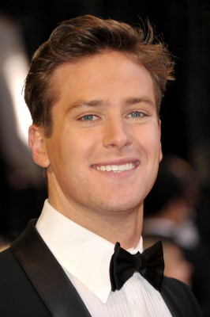
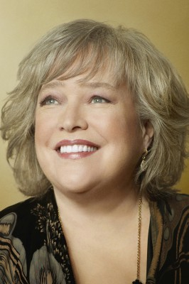
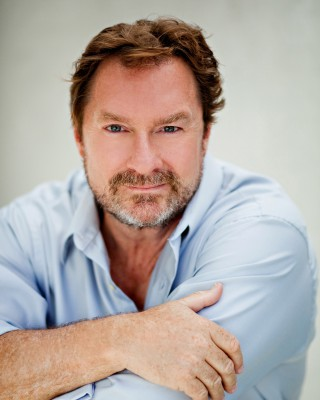
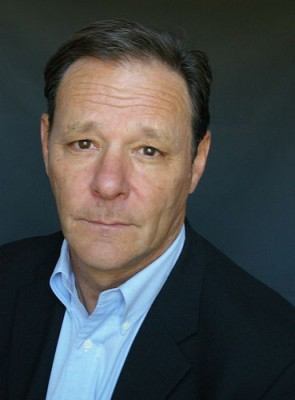
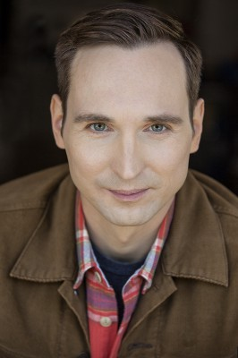
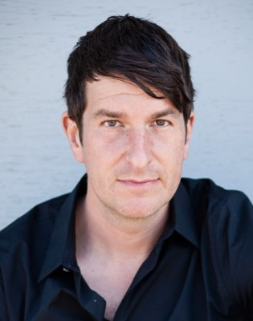
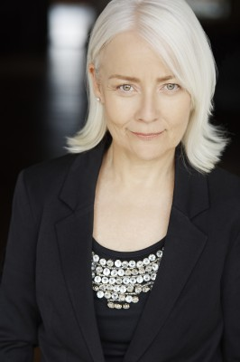

#11699 Die Berufung - Ihr Kampf für Gerechtigkeit
Alternativ: On the Basis of Sex (Englischer Titel)

 IMDB-Wertung: 6.9 / 10
IMDB-Wertung: 6.9 / 10  Metascore: 59
Metascore: 59 
Die Vereinigten Staaten von Amerika in den 1950er Jahren: Frauen und Männer sind zwar in der Theorie gleichgestellt, doch gibt es immer noch zahlreiche Bereiche, die Frauen nicht offenstehen, sie dürfen etwa weder Polizistin noch Richterin werden. Für Ruth Bader Ginsberg (Felicity Jones) bedeutet das einen Karriereverlauf, den sie so nicht hinnehmen möchte: Nachdem sie ihr Jura-Studium in Harvard als Jahrgangsbeste abgeschlossen hat, muss sie sich mit einer Stelle als Professorin begnügen, obwohl sie lieber bei Gericht arbeiten würde. Da macht sie ihr Mann Marty (Armie Hammer) auf den Fall Charles Moritz aufmerksam, der sich aufopferungsvoll um seine kranke Mutter kümmert, allerdings aufgrund seines Geschlechts nicht den eigentlich üblichen Steuernachlass erhält. Ruth sieht ihre Chance gekommen, einen Präzedenzfall zu schaffen und die rückständigen Strukturen der Gesellschaft und die Gesetzeslage aufzubrechen…
Jahr: 2018
Dauer: 120 Minuten
FSK: 0
Land: USA Studio: Focus FeaturesTonspuren: DTS - ,
Untertitel:
Auflösung: 1080p (1920x1040) Größe: 8058 MB
Genre: Drama, Biographie
Regisseur: Mimi Leder
Drehbuch: Daniel Stiepleman
Soundtrack: Mychael Danna
Darsteller:
- Felicity Jones als Ruth Bader Ginsburg
-  Armie Hammer als Martin Ginsburg
- Justin Theroux als Mel Wulf
 Sam Waterston als Erwin Griswold
Sam Waterston als Erwin Griswold-  Kathy Bates als Dorothy Kenyon
- Cailee Spaeny als Jane Ginsburg
- Jack Reynor als Jim Bozarth
-  Stephen Root als Professor Brown
-  Chris Mulkey als Charles Moritz
- Francis X. McCarthy als Judge Daugherty
- Ronald Guttman als Gerald Gunther
 Wendy Crewson als Harriet Griswold
Wendy Crewson als Harriet Griswold John Ralston als Tom Miller
John Ralston als Tom Miller-  Karl Graboshas als Emergency Room Doctor
- Angela Galuppo als Emily Hicks
- Jeff Lillico als Fitzpatrick
- Callum Shoniker als James Ginsburg
-  Joe Cobden als Allen Derr
- Sharon Washington als Pauli Murray
- Arlen Aguayo-Stewart als Protest Leader
- Holly Gauthier-Frankel als Millicent
- Tom Irwin als Greene
- Alexandra Petrachuk als Burton
 Paul Spera als Bennett
Paul Spera als Bennett- Aiza Ntibarikure als Roemer
- Patrick Ryan als Guy #1
- Julie Trépanier als Emily's Girlfriend
- Jonathan Maxwell Silver als Intern #1
- Julia Borsellino als Hennie Callaghan
- Nick Baillie als Another Client
- Anton Koval als Construction Worker
- Alex Biro als Pruitt
- Gita Miller als Student Protestor #1
- Sean Curley als Student Protestor #2
- Kareem Tristan Alleyne als ACLU Staffer #1
- Stephanie Costa als ACLU Staffer #2
- Jessica B. Hill als ACLU Staffer #3
- Raphael Grosz-Harvey als ACLU Staffer #4
- Robert J. Tavenor als Court Clerk
- Gabrielle Graham als Parker
- Jenny Brizard als ACLU Receptionist
- Amanda MacDonald als Mother
- Ian Geldart als Male Classmate #1
- Sean Colby als Male Classmate #3
-  Dawn Ford als Nurse #1
- Daniel Rindress-Kay als Colleague
- Michael Dickson als Second Professor
- Alexandre Bélanger als Harvard Student (uncredited)
- Michael Garvey als Attorney (uncredited)
- Ruth Bader Ginsburg als Herself (uncredited)
Datei: X:\2018(A-F)\Berufung - Ihr Kampf für Gerechtigkeit, Die (2018, FSK0, 1920x1040).mkv seit 31.08.2019
Festplatte: HD 2017(A-Z)-2018(A-F)
 Es gibt insgesamt 151 Filme in der Gruppe '2018(A-F)'
Es gibt insgesamt 151 Filme in der Gruppe '2018(A-F)'